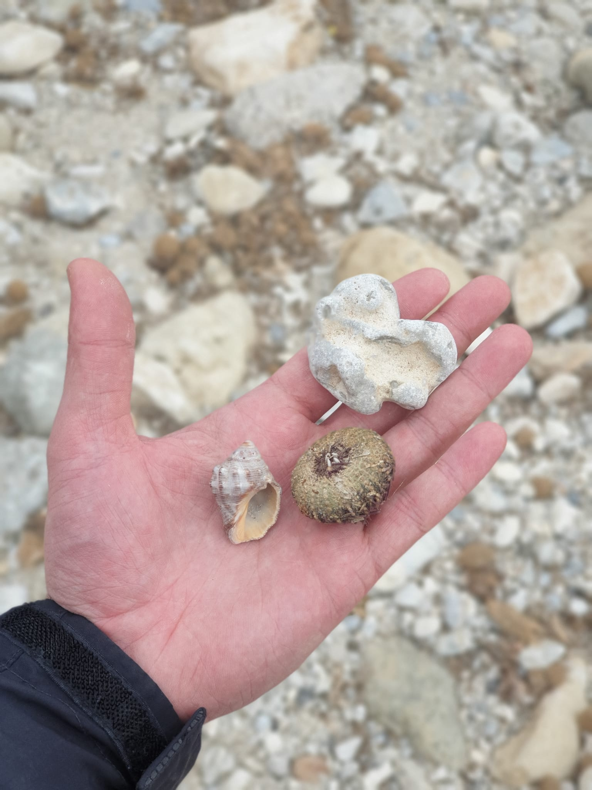
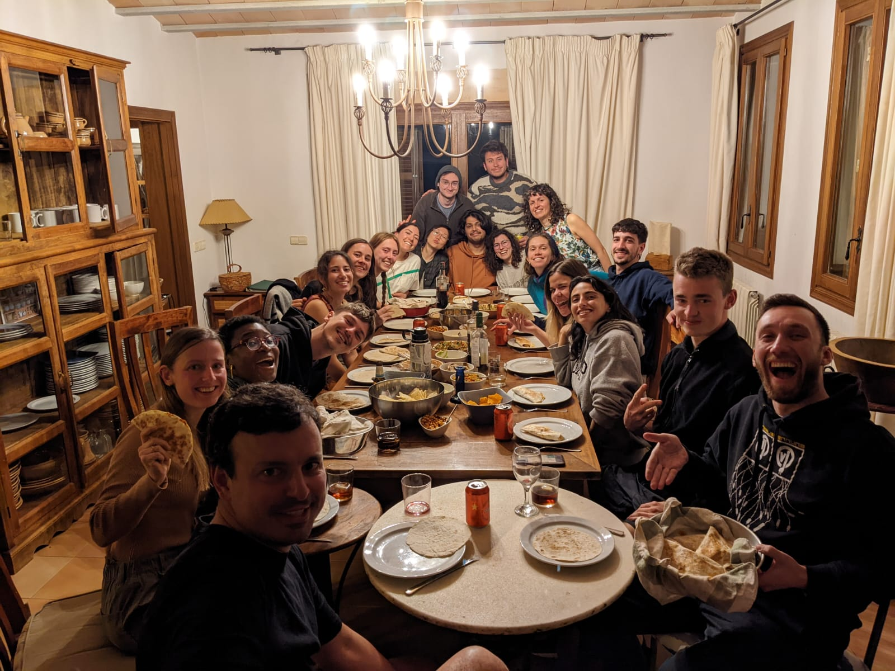
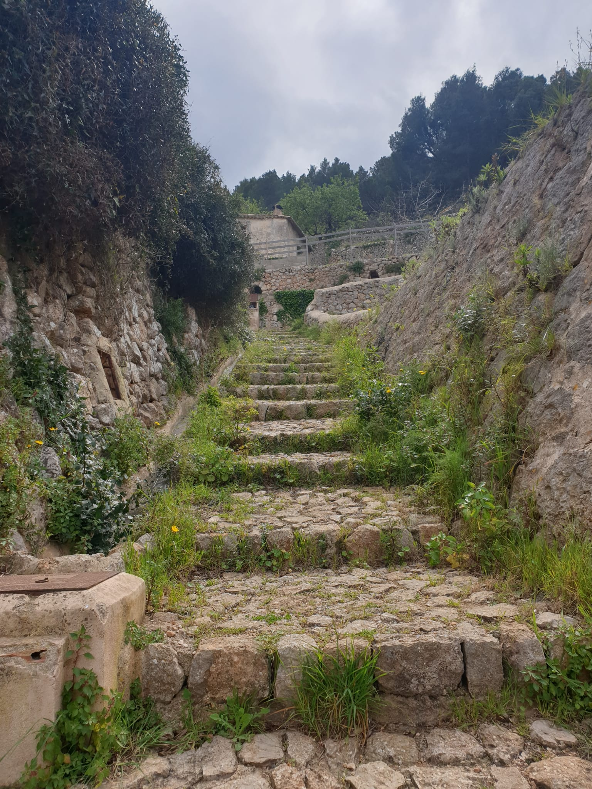
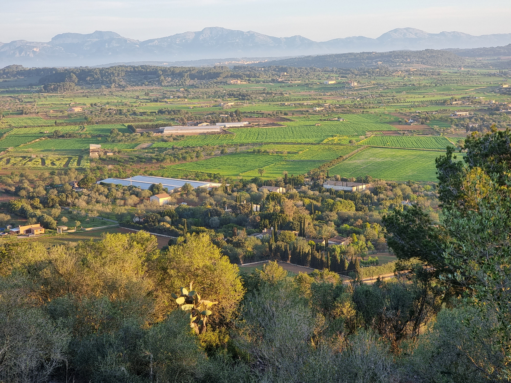
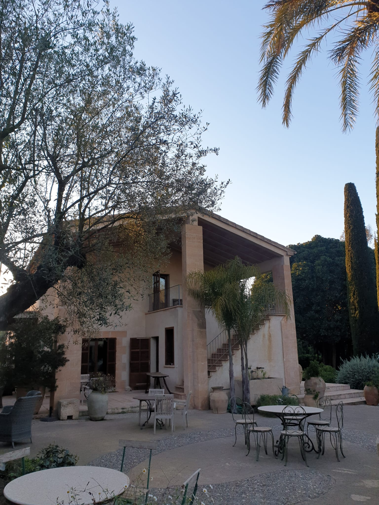

/mallorca_trip
(10_april_2022)
We finished the trimester by doing a research trip to Mallorca, the biggest of the Balearic islands. Mariana lives there and she loves the island, same as everyone who has the chance of visiting it at least once in life. I had already been to Mallorca but that was long ago, so for me, it was also a chance of exploring it almost from scratch.
During the trip, we made a workshop carried by Thomas Duggan, where we got the opportunity of exploring Mallorca's environment and nature. From the sea and the algae, the sand, the rocks, the small nonhuman beings, to the mount and the vegetation, the wind, the paths... We discovered many different things in relation to the island itself but I feel we almost didn't get to know the culture, the language, the traditions. I think that was a really important part that we missed and we'll have to come back to visit also some urban areas and get to know the people and their culture.
We finished the trimester by doing a research trip to Mallorca, the biggest of the Balearic islands. Mariana lives there and she loves the island, same as everyone who has the chance of visiting it at least once in life. I had already been to Mallorca but that was long ago, so for me, it was also a chance of exploring it almost from scratch.
During the trip, we made a workshop carried by Thomas Duggan, where we got the opportunity of exploring Mallorca's environment and nature. From the sea and the algae, the sand, the rocks, the small nonhuman beings, to the mount and the vegetation, the wind, the paths... We discovered many different things in relation to the island itself but I feel we almost didn't get to know the culture, the language, the traditions. I think that was a really important part that we missed and we'll have to come back to visit also some urban areas and get to know the people and their culture.

This week was oriented more in a spiritual way than empirical. I struggle a bit when I am told to
be spiritual: I like to be spiritual when I feel like it.. This is why my
offering to Mallorca was something more pragmatic and utilitarian. I took a small rock from a beach
and tried to turn it into something beneficial for the island. This is the result of the exploration:
Apart from this main workshop, we also visited two other spaces of Mallorca: Salines d'Es Trenc and a place where they practiced the tradition of crafting "Llata d'espart". Both visits were interesting and brought us a bit more to inhabitants of Mallorca and their culture.
In any case, the most enriching aspect of the trip was the fact of living and coexisting with my classmates for one week. This trip gave us the opportunity to get to know more things about each other and to confirm that we are a lovely group with amazing qualities and connection points. We prepared thematic dinners for everyone (lasagna night, Mexican food, BBQ...) and played games while chilling and partying (just a bit) all together. It is not hard to see how there's harmony in this group and we need to make it last as long as possible.
Thanks Mallorca for this experience!




